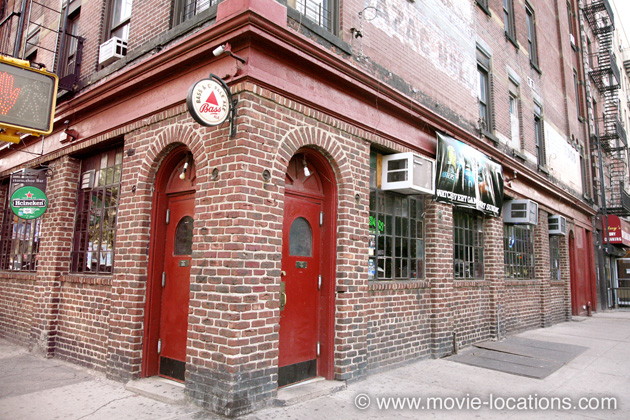
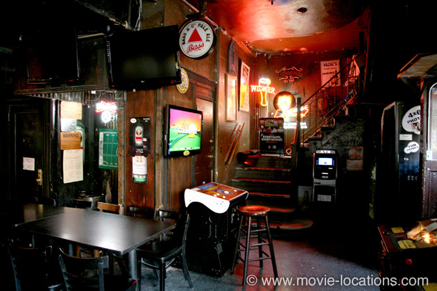

The Godfather Part II
Main Content

Discover where The Godfather Part II (1974) was filmed, in New York; Lake Tahoe; Miami, Florida; Dominican Republic; California; and Sicily.
Regarded by many as superior to part one, The Godfather, Part II was the first sequel ever to win Best Picture at the Oscars.
The village of Vito Andolini’s youth is supposedly ‘Corleone’, a real town about twenty miles south of Palermo in western Sicily, though the locale seen in the movie is around Taormina in the northeast of the island.
A more surprising Italian location is New York’s 'Ellis Island', point of arrival for European immigrants during the first half of the century, where Vito Andolini becomes Vito Corleone. The buildings had fallen into disrepair, but are now restored as the Ellis Island Immigration Museum. The museum is located in the Main Building of the former immigration station complex, and records stories of the 12 million immigrants who passed through Ellis Island to a new life in America. The film uses the Old Fish Market at Trieste, on the Adriatic coast of northern Italy. This, too, has been restored and is now a cultural centre, the Salone Degli Incanti (Salon of Enchantments).
The Corleone lakeside estate is Fleur du Lac, the Henry Kaiser estate on the western California shore of Lake Tahoe. The lakeside area has been developed and the Corleone compound is now the boathouse of a private, gated, community.

The scenes of younger Vito’s Little Italy neighbourhood of 1917 were shot on Sixth Street in the East Village between Avenues A and B, tricked out in period dressing.
A block north, you'll find the bar where the Rosato brothers try to garotte Pentangeli, which was PH Vazac’s and is now 7B Horseshoe Bar (Vazac's), 108 Avenue B at Seventh Street (known as Seven and B), at the southeast corner of Tompkins Square Park in the East Village.
Popular in movies as a ‘lowlife’ bar, 7B Horseshoe Bar is where Mick Dundee (Paul Hogan) gets unwittingly fixed up with a bloke in drag in Crocodile Dundee; where Harry Angel (Mickey Rourke) gets photos of Johnny Favorite in Alan Parker's Angel Heart; and it's the local hangout in 1988's Five Corners with Jodie Foster and Tim Robbins. I love this bar. It's not the place if you want elegance and cocktails, but it's a friendly local with a great jukebox.
The ensuing shoot-out was filmed outside on East Seventh Street.
When Michael Corleone (Al Pacino) visits Hyman Roth (legendary acting coach Lee Strasberg) in Miami it’s the real thing, but ‘Cuba’ was clearly out of the question. The pre-Revolutionary scenes were filmed in the Dominican Republic, the eastern part of the island of Hispaniola (Gulf & Western, Paramount’s parent company conveniently owns property in there).
Santo Domingo, the island’s capital on the southern coast, stands in for 1950s ‘Havana’, where Roth’s hotel is Occidental El Embajador, Avenue Sarasota 65, built in 1956 and given a major makeover in 2014.
Santo Domingo’s enormous Presidential Palace stands in for the palace of President Batista, where the New Year’s festivities are cut short by insurrection.
Back in the USA, the army post, where the FBI protect Pentangeli, is the California Institute for Men, Central Avenue, three miles south of Chino, Highway 60 to the east of Los Angeles.
The Florida home of Hyman Roth is 2045 North Hibiscus Drive off Biscayne Boulevard in the Keystone Islands of North Miami.
Two other places claiming to have been used as locations, but not instantly recognisable, are the Doheny Mansion, Chester Place, on the campus of Mount St Mary’s College, off West Adams Boulevard in Los Angeles. You can see the Mansion in Sam Raimi's Drag Me To Hell and Spider-Man3, and as the ‘Consulate of Genovia’ in The Princess Diaries.
While in New York, venerable coffee house Caffe Reggio, 19 MacDougal Street at West 3rd Street in Greenwich Village is often claimed to appear in the film.
The Reggio, reputed to be New York’s oldest coffee house, is also supposed to featured in Serpico but, although Frank Serpico's classmate says she works in Caffe Reggio, we don’t – despite claims made in many New York guidebooks – actually get to see the famed Village hangout. You can, though, see the cafe in the dull 1976 Sean Connery thriller The Next Man, as well as in the original 1971 Shaft and more recently in the Coens’ Inside Llewyn Davis.
Visit Info
Visit The Film Locations
New York
Flights: John F Kennedy International Airport, New York, NY 11430 (tel: 718.244.4444)
Visit: New York
Travel around: MTA
Visit: 7B Horseshoe Bar (Vazac's), 108 Avenue B, New York, NY 10009 (tel: 212.677.6742)
Visit: the Ellis Island Immigration Museum (tel: 212.561.4588)
California | Los Angeles
Visit: Los Angeles
Flights: Los Angeles International Airport (LAX), 1 World Way, Los Angeles, CA 90045 (tel: 424.646.5252)
Travelling around: Los Angeles Metro
Nevada
Visit: Nevada
Visit: Las Vegas
Flights: Las Vegas McCarran International Airport, 5757 Wayne Newton Boulevard, Las Vegas, NV 89119 (tel: 702.261.5211)
Visit: the Tropicana, 3801 Las Vegas Boulevard South, Las Vegas, NV 89109 (tel: 702.739.2222)
Florida
Visit: Florida
Visit: Miami & The Beaches
Italy
Visit: Italy
Visit: Sicily
Visit: Trieste
Visit: the Salone Degli Incanti, Riva Nazario Sauro, 1, 34123 Trieste
Dominican Republic
Visit: Dominican Republic
Stay at: the Occidental El Embajador, Avenue Sarasota 65, Santo Domingo 11211, Dominican Republic (tel: +44.800.021.1573)